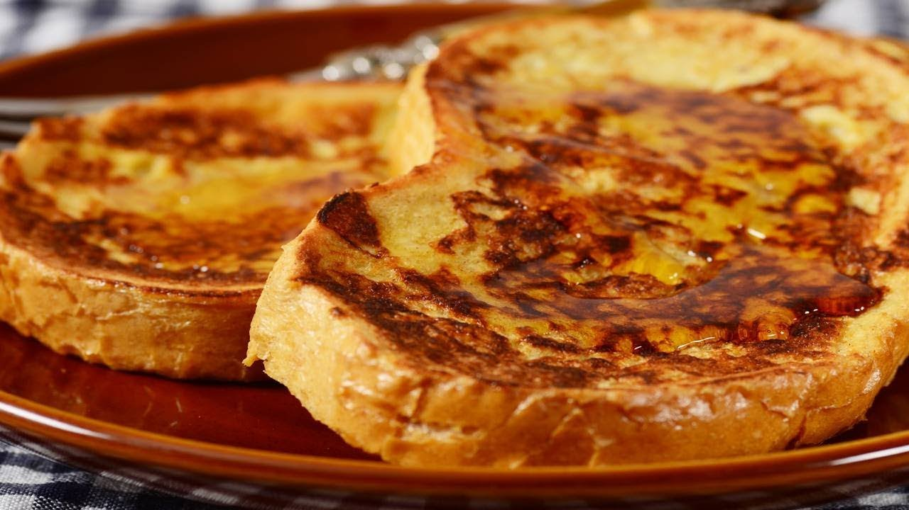

French Toast

Description
There are many, fancy variations on this basic recipe. This easy
recipe works with many types of bread—white, whole wheat,
brioche, cinnamon-raisin, Italian, or French. Serve hot with
butter or margarine and maple syrup.
Ingredients
- ⅔ cup milk
- 2 large eggs
- 1 teaspoon vanilla extract (Optional)
- ¼ teaspoon ground cinnamon (Optional)
- salt to taste
- 6 thick slices bread
- 1 tablespoon unsalted butter, or more as needed
Steps
- Whisk milk, eggs, vanilla, cinnamon, and salt together in
a shallow bowl.
- Lightly butter a griddle or a pan and heat over medium-high heat
- Dunk bread in the egg mixture, soaking both sides. Transfer to
the hot skillet and cook until golden, 3 to 4 minutes per side.
Serve hot.